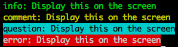

我們通常會把一些每小時、每 6 小時、每日、每週、每月等等之類固定時間要做的工作丟到 Linux 系統的 crontab 中去執行，通常像是每日要統計昨天網站的活動資訊做數據分析之類的工作，這類的工作通常會花費比較久的時間
若是事件驅動的行為，需要花比較多時間執行的話，我們會使用 Queue 的方式做處理，讓網站的回應時間變快，花時間的工作背景處理
像是會員使用 Email 當作帳號註冊後，需要發送 Email 確認信給會員，以便確認這個 Email 真的存在
但是因為這樣寄送 Email 的時間是不確定的時間（我們沒辦法控制使用者什麼時候來註冊）
而且寄送 Email 的執行時間又特別的長，所以只能用 Queue 的方式來處理
在使用 Laravel Cronjob 的時候，我們為了知道目前處理的狀況，我們可能會需要在終端機（Terminal）上顯示處理的一些相關訊息，除了一般的 echo 外，我們可以這樣做：
<?php
class CronjobCommercialEmail extends Command {
// ...前略
public function fire()
{
$this->info('info: Display this on the screen');
$this->comment('comment: Display this on the screen');
$this->question('question: Display this on the screen');
$this->error('error: Display this on the screen');
}
}
這樣我們在終端機畫面就會看到像這樣的訊息：

因為通常 Cronjob 通常會處理很久，我們這樣使用可以快速的幫我們知道目前處理的狀況～
我們通常會在命令列用 $ crontab -e 的方式去編輯排程工作
$ crontab -e
在用到 crontab 的時候，我們需要瞭解怎麼設定排程工作的執行時間，整個的 crontab 的設定可能會像這樣：
# 每天凌晨 3 點統計昨天的 Pageview
0 3 * * * /usr/bin/php /home/kejyun/laravel4/artisan cronjob:statisticYesterdayPageview
在前方可以看到有 5 個數字可以做設定，依序分別代表的意思為：
這 5 個參數之間用空白隔開，每個參數除了設定單一個數字，也可以用逗號(,)去隔開設定相同單位的時間設定，像是：
# 每天凌晨 4 點及 16 點寄送廣告信
0 4,16 * * * /usr/bin/php /home/kejyun/laravel4/artisan cronjob:sendCommercialMail
這裏有一些相關的設定範例可以當作參考：
# 每小時的第 18 分鐘執行
18 * * * *
# 8 點 10 分執行
10 8 * * *
# 8 點的每分鐘執行一次（共執行 60 次）
* 8 * * *
# 在每個禮拜二每小時的第 18 分鐘執行
18 * * * 2
# 你也可以每隔一段時間去執行 crontab
# 如果我們每 15 分鐘要去執行，你可以用這樣的格式 */15
# 這樣的意思是將分鐘數，切割成（除以）每 15 分鐘執行
*/15 * * * *
# 每 2 小時執行
0 */2 * * *
# 每 2 小時又 20 分鐘執行
*/20 */2 * * *
小提醒
系統的 crontab 運作方式是
每分鐘會到設定的 crontab 找看看有沒有符合現在這個時間的排程工作，所以像是* 8 * * *這樣的設定，因為沒有明確指定分鐘，在 8 點每分鐘檢查的 60 次都符合條件，所以會執行 60 次，若僅要 8 點時執行一次，請明確設定要執行的分鐘條件，像是0 8 * * *
你可以在 crontab 最上方指定 Email，在執行完成後寄送 email 通知
MAILTO="kejyun@gmail.com"
然後在 crontab 最後加上 > /dev/null 2>&1，把結果丟到垃圾桶
> /dev/null 2>&1